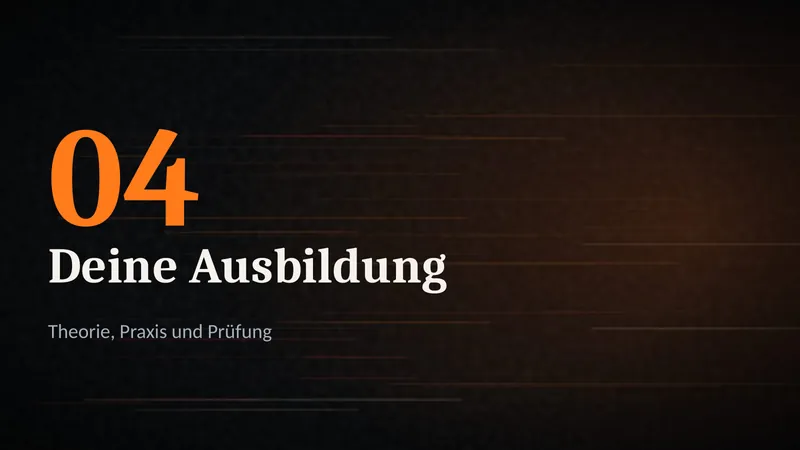
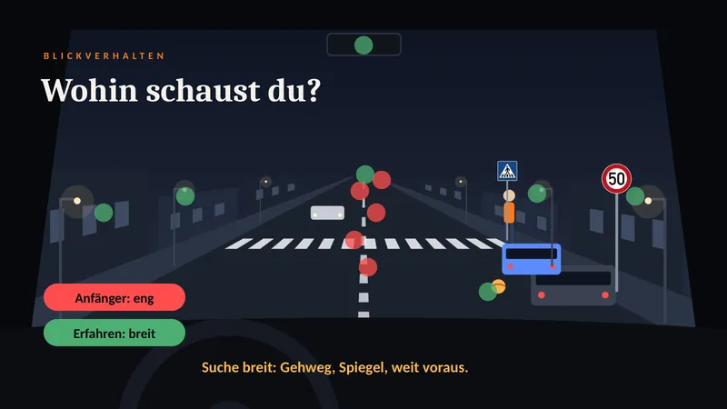
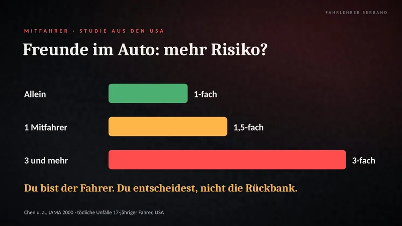
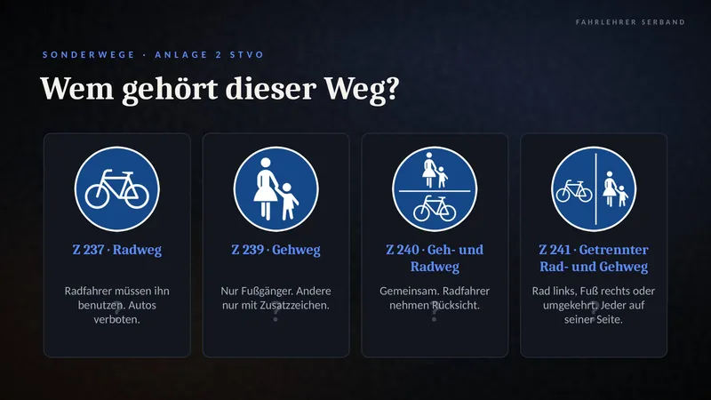
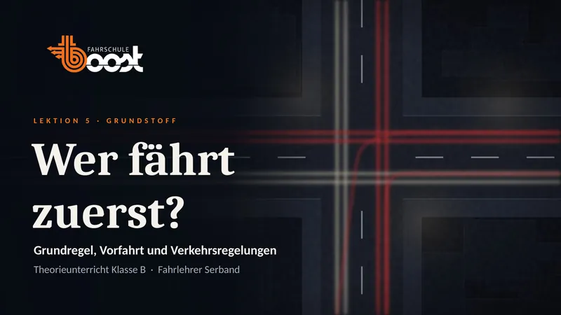
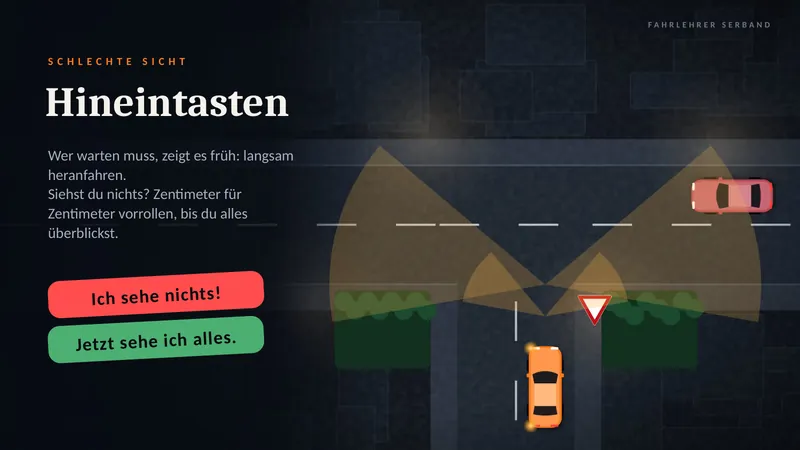
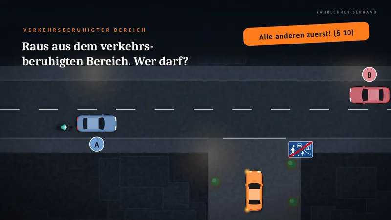
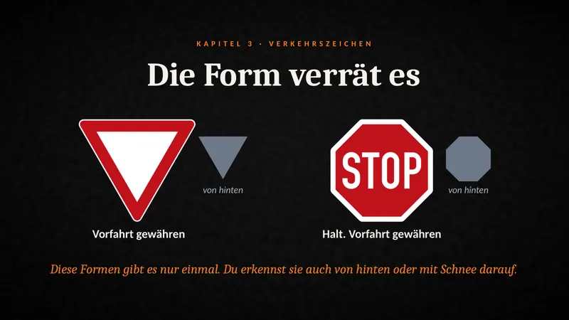
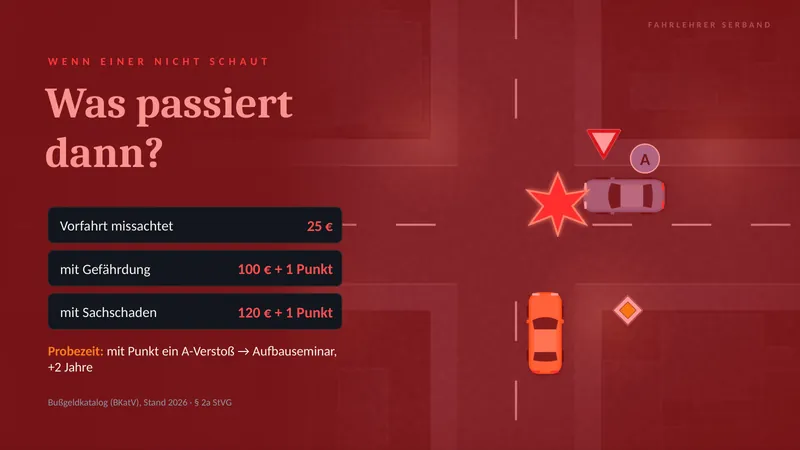

Theorieunterricht in Offenbach
So läuftTheorie.
Ich lese keine Folien vor. An jedem Abend arbeitet ihr selbst mit: in Gruppen, im Rollenspiel oder mit Arbeitsblättern.
- 14
- Lektionen à 90 Minuten
- 7
- Abende mit je zwei Lektionen
- 180
- Minuten pro Abend, Pause nach 90

Alle Bilder auf dieser Seite sind echte Folien aus meinem Unterricht. Tippe eine Folie an, um sie groß zu sehen.
Abend 1 + 2
Persönliche Voraussetzungen · Risikofaktor Mensch
Was brauchst du für den Führerschein, wie gut siehst du, und was bremst dich aus? Im zweiten Teil geht es um dich selbst: Ärger, Stress, Übermut und die Freunde auf der Rückbank.





Abend 3 + 4
Rechtliche Rahmenbedingungen · Straßenverkehrssystem
Versicherung, TÜV und Zulassung spielt ihr im Rollenspiel durch. Danach geht es auf die Straße: rechts fahren, Linien, Sonderwege und die Autobahn.



Abend 5 + 6
Vorfahrt · Verkehrszeichen
Wer fährt zuerst? Wir fangen bei der Grundregel an und gehen dann Kreuzung für Kreuzung weiter. Im zweiten Teil lernst du, Verkehrszeichen an Form und Farbe zu erkennen.










Und die anderen Abende? Die zeige ich dir am liebsten live.